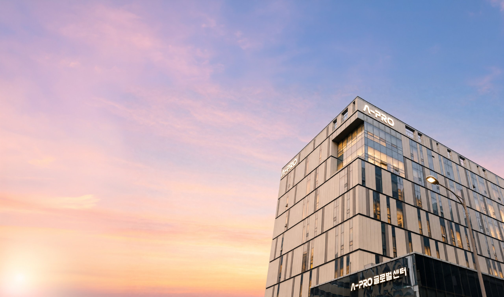
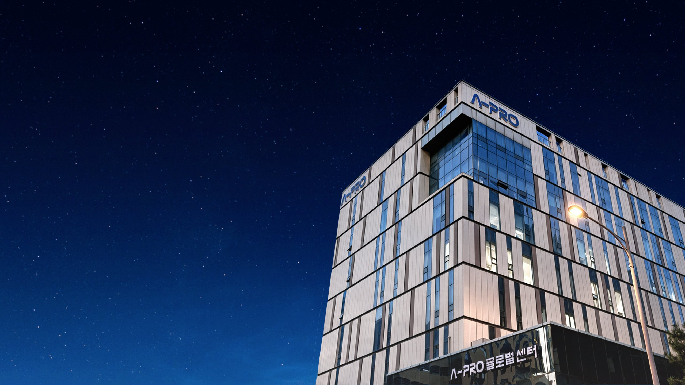

The Best Electrical Engineering Solution Provider
VISION 2030
에이프로 그룹은 2030년까지 종합 에너지 인프라 분야에서 글로벌 Top5에 진입하는 것을 미래 목표로 삼고 있습니다.단순한 부품·장비 공급을 넘어, 에너지 전 영역을 아우르는 통합 솔루션 기업으로 도약하겠다는 의지를 담고 있습니다.
Advance + Pioneer
앞선 기술력과 축적된 노하우로 시장을 선도합니다.
Aggressiveness + Remarkability
도전적이고 과감한 자세로 시장을 확대합니다.
Agility + Organism
빠르게 변화하는 에너지 환경에 유연하게 대응합니다.

에이프로는 구성원이 자부심을 갖고 성장할 수 있는 ‘일하기 좋은 일터’를 기반으로, 6대 핵심가치(Core 6-Values)와 AAA 전략을 실천하여 글로벌 종합 에너지 솔루션 기업으로 나아갑니다